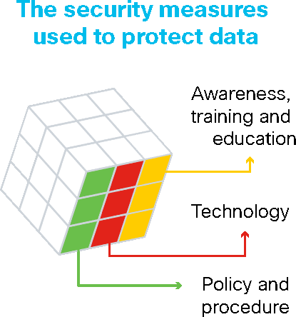
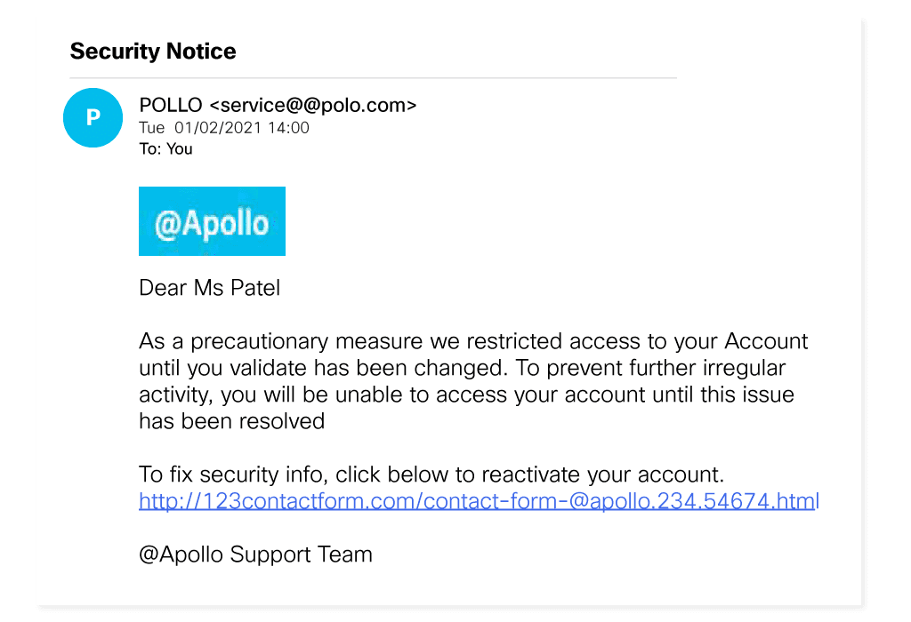

Explain the basics of being safe online, including what cybersecurity is and its potential impact.
Explain the most common cyber threats, attacks and vulnerabilities.
Explain how organizations can protect their operations against these attacks.
Access various information and resources to explore the different career options in cybersecurity.
Module 1: Introduction to Cybersecurity
Welcome to this module, which aims to help you understand
the growing need for cybersecurity.
Faced with an unprecedented surge in cyber attacks, never before has
the demand for cybersecurity professionals been so high.
Find out more about what cybercriminals want and what you can do
to ensure that a cyber threat never becomes a reality.
1.2 Organizational Data
Before you can start implementing best practices to safeguard organizational data, you need to know
what it is. In organizations like eLearning company @Apollo, there are two main types of data that
you should be aware of.
[]
Let’s explore these now.
1.2.1 Types of Organizational Data
1.2.1.1 Traditional Data
Traditional data is typically generated and maintained by all organizations, big and small.
It includes the following:
Transactional data such as details relating to buying and selling, production activities
and basic organizational operations such as any information used to make employment
decisions.
Intellectual property such as patents, trademarks and new product plans, which allows an
organization to gain economic advantage over its competitors. This information is often
considered a trade secret and losing it could prove disastrous for the future of a
company.
Financial data such as income statements, balance sheets and cash flow statements, which
provide insight into the health of a company.
1.2.1.2 Internet of Things (IoT) and Big Data
IoT is a large network of physical objects, such as sensors, software and other equipment. All
of these ‘things’ are connected to the Internet, with the ability to collect and share data. And
given that storage options are expanding through the cloud and virtualization, it’s no surprise
that the emergence of IoT has led to an exponential growth in data, creating a new area of
interest in technology and business called 'Big Data'.
1.2.2 The Cube
The McCumber Cube is a model framework created by John McCumber in 1991 to help organizations
establish and evaluate information security initiatives by considering all of the related
factors that impact them. This security model has three dimensions:
ordered list type="1"
The foundational principles for protecting information systems.
The protection of information in each of its possible states.
The security measures used to protect data.
Confidentiality is a set of rules that prevents sensitive information
from being disclosed to unauthorized people, resources and processes. Methods to
ensure confidentiality include data encryption, identity proofing and two factor
authentication.
Integrity ensures that system information or processes are protected from
intentional or accidental modification. One way to ensure integrity is to use a
hash function or checksum.
Availability means that authorized users are able to access systems and data
when and where needed and those that do not meet established conditions, are
not. This can be achieved by maintaining equipment, performing hardware repairs,
keeping operating systems and software up to date, and creating backups.
Processing refers to data that is being used to perform an operation such as
updating a database record (data in process).
Storage refers to data stored in memory or on a permanent storage device such
as a hard drive, solid-state drive or USB drive (data at rest).
Transmission refers to data traveling between information systems (data in
transit).

Awareness, training and education are the measures put in place by an
organization to ensure that users are knowledgeable about potential security threats
and the actions they can take to protect information systems.
Technology refers to the software- and hardware-based solutions designed to
protect information systems such as firewalls, which continuously monitor your
network in search of possible malicious incidents.
Policy and procedure refers to the administrative controls that provide a
foundation for how an organization implements information assurance, such as
incident response plans and best practice guidelines.
1.2.3 What Do You Think?
A concerned customer has forwarded on what they believe to be a fraudulent email. It looks as if it
has been sent by @Apollo but something appears a little 'phish-y.'

Take a look at the email. Which of the following indicates that it is in fact a phishing email?
Four answers are correct
Email address
correct
Customer name
wrong
Link URL
correct
The language, spelling and grammar
correct
Graphics
correct
Hints
Closer inspection reveals:
that the sender's email domain is spelled incorrectly
that the link URL is not pointing to @Apollo's website
poor language, spelling and grammar
low quality, pixelated graphics
Phishing emails can be hard to detect. For example, they will often address you by name to
appear legitimate, but hackers can easily find this information on the Internet. So, it’s
important to stay alert and think before you click.
1.2.4 Is This for Real?
Yes, phishing is very common and often works. For example, in August 2020, elite gaming brand Razer
experienced a data breach which exposed the personal information of approximately 100,000 customers.
A security consultant discovered that a cloud cluster (a group of linked servers providing data
storage, databases, networking, and software through the Internet), was misconfigured and exposed a
segment of Razer’s infrastructure to the public Internet, resulting in a data leak.
It took Razer more than three weeks to secure the cloud instance from public access, during which
time cybercriminals had access to customer information that could have been used in social
engineering and fraud attacks, like the one you uncovered just now.
Organizations therefore need to take a proactive approach to cloud security to ensure that sensitive
data is secured.
1.2.5 Data Security Breaches
The implications of a data security breach are severe, but they are becoming all too common.
The Persirai botnet
In 2017, an Internet of Things (IoT) botnet, Persirai, targeted over 1,000 different models
of Internet Protocol (IP) cameras, accessing open ports to inject a command that forced the
cameras to connect to a site which installed malware on them. Once the malware was
downloaded and executed, it deleted itself and was therefore able to run in memory to avoid
detection.
Over 122,000 of these cameras from several different manufacturers were hijacked and used to
carry out distributed denial-of-service (DDoS) attacks, without the knowledge of their
owners. A DDoS attack occurs when multiple devices infected with malware flood the resources
of a targeted system.
The IoT is connecting more and more devices, creating more opportunities for cybercriminals
to attack.
Equifax Inc.
In September 2017, Equifax, a consumer credit reporting agency in the United States,
publicly announced a data breach event: Attackers had been able to exploit a vulnerability
in its web application software to gain access to the sensitive personal data of millions of
customers.
In response to this breach, Equifax established a dedicated website that allowed Equifax
customers to determine if their information was compromised. However, instead of using a
subdomain of equifax.com, the company set up a new domain name, which allowed cybercriminals
to create unauthorized websites with similar names. These websites were used to try and
trick customers into providing personal information.
Attackers could use this information to assume a customer’s identity. In such cases, it
would be very difficult for the customer to prove otherwise, given that the hacker is also
privy to their personal information.
If you are ever faced with a similar situation, quickly verify if your information was compromised,
so that you can minimize the impact. Keep in mind that, in a time of crisis, you may be tricked into
using unauthorized websites.
Always be vigilant when providing personally identifiable information over the Internet. Check your
credit reports regularly and immediately report any false information, such as applications for
credit that you did not initiate or purchases on your credit cards that you did not make.
1.2.6 Consequences of a Security Breach
These examples show that the potential consequences of a security breach can be severe.
Select the headings for a summary of these impacts.
Reputational damage
A security breach can have a negative long-term impact on an organization’s reputation that has
taken years to build. Customers, particularly those who have been adversely affected by the
breach, will need to be notified and may seek compensation and/or turn to a reliable and secure
competitor. Employees may also choose to leave in light of a scandal.
Depending on the severity of a breach, it can take a long time to repair an organization’s
reputation.
Vandalism
A hacker or hacking group may vandalize an organization’s website by posting untrue information.
They might even just make a few minor edits to your organization’s phone number or address,
which can be trickier to detect.
In either case, online vandalism can portray unprofessionalism and have a negative impact on
your organization’s reputation and credibility.
Theft
A data breach often involves an incident where sensitive personal data has been stolen.
Cybercriminals can make this information public or exploit it to steal an individual’s money
and/or identity.
Loss of revenue
The financial impact of a security breach can be devastating. For example, hackers can take down
an organization’s website, preventing it from doing business online. A loss of customer
information may impede company growth and expansion. It may demand further investment in an
organization’s security infrastructure. And let’s not forget that organizations may face large
fines or penalties if they do not protect online data.
Damaged intellectuel property
A security breach could also have a devastating impact on the competitiveness of an
organization, particularly if hackers are able to get their hands on confidential documents,
trade secrets and intellectual property.
Despite the best of intentions and all the safeguards you can put in place, protecting organizations
from every cyberattack is not feasible.
Cybercriminals are constantly finding new ways to attack and, eventually, they will succeed.
When they do, it will be up to cybersecurity professionals, like you, to respond quickly to minimize its
impact.